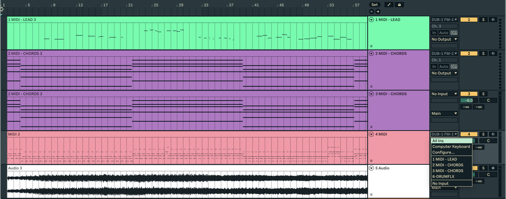

record · the FM-1 into Ableton Live
one USB cable, no audio interface
Record
An FM-1 running AISLING, into Ableton Live.
The FM-1 sends its sound down the USB cable. Ableton records it like any other input.
The recording
Record the sound
The computer sees the FM-1 as a sound input called DUB-1 FM-1. It needs no driver on a Mac, and no cable but the USB one.
- Plug it inThe FM-1 into the computer with a USB data cable, switched on, with AISLING playing.
- Choose the inputIn Live: Settings → Audio. Driver Type CoreAudio, Audio Input Device DUB-1 FM-1. Leave the output on your speakers or headphones.
- Set 44,100On the same page, Sample Rate 44100. It is the only rate the FM-1 sends.
- Make a trackA new audio track. Audio From: Ext. In, and under it the pair 1/2: AISLING is in stereo.
- ListenMonitor In to hear it through the computer, a moment late. Or leave Monitor Off and listen at the FM-1's own socket: an armed track records either way.
- RecordArm the track, press record, and play. Stop when the piece has said what it had to say.
| What comes down the cable | What that means |
|---|---|
| All of AISLING | The whole mix, effects and all, as it leaves for the socket. There are no separate layers. |
| Before MASTER | The level is fixed. Turn MASTER right down and the recording is the same, so it can be quiet in the room. |
| Stereo, 16 bits, 44,100 | A standard USB sound device, input only. Nothing goes back up the cable to the FM-1's socket. |
| Only while it plays | Stopped, the FM-1 sends silence. The sleep timer's fade is not in the recording, but its stop is. |
Reading the sound over USB adds a little to the FM-1's work. A busy piece that was near its limit may drop out sooner.
Tempo
Keep it in time with the set
Send the FM-1 Ableton's clock and it starts, stops and keeps time with Live, so what you record lies on the grid.
- Turn Sync onSettings → Link, Tempo & MIDI. Find DUB-1 FM-1 among the outputs and switch Sync on.
- Press play in LiveThe FM-1 starts with it. Its screen shows EXT where the tempo was.
- Set the tempo in LiveThe sequences follow it. Stop in Live stops the FM-1; when the clock goes, AISLING takes its own tempo back.
- The recording arrives a little late, by the time the sound takes to cross the cable and the computer. If it sits behind the grid, drag the clip back, or set Driver Error Compensation on the Audio page.
- To change piece from Live, give a MIDI clip a program number and send the track to DUB-1 FM-1. Live counts from 1, so Pgm 1 to 8 are the eight pieces in their order, Skellig first.
The piece as MIDI
Record the notes it plays
AISLING sends every note it plays out over USB, each layer on its own channel. A MIDI track for each catches the piece as notes, to edit, or to play on another instrument.

| Channel | What it carries |
|---|---|
| 1 | The Drone: the piece's chords, as long notes. |
| 2 | The Sequence, and its repeats. |
| 3 | The Lead. |
| 4 | Sequence 2. |
| 16 | The effects you play (the next section). |
- Let the notes inMIDI out is on unless you turned it off (GLO's Setup page). In Live's Link, Tempo & MIDI, switch Track on for the DUB-1 FM-1 input.
- A track for each layerA MIDI track with MIDI From: DUB-1 FM-1 and, under it, the layer's channel: Ch. 3 for the Lead, Ch. 1 for the Drone.
- Monitor Off, and recordSet each track's Monitor to Off, arm them all (hold Cmd to arm more than one), and record.
- Monitor Off matters. A track that sends the notes back to the FM-1 makes every layer play the Lead.
- A muted layer sends nothing. Turn a layer up on the FM-1 if its track stays empty.
- AISLING sends its own clock too, with start and stop, so Live can follow the FM-1's tempo in place of leading it: switch Sync on for the DUB-1 FM-1 input.
The performance
Record the effects you play
Each effect you hold on the FM-1 goes out as a MIDI message. Record those, and Live can play your hands back.
- MIDI out onOn the FM-1: press GLO for the Setup page and set MIDI out on.
- Take it inIn Live's Link, Tempo & MIDI, switch Track on for the DUB-1 FM-1 input. Make a MIDI track with MIDI From: DUB-1 FM-1, channel 16.
- Record, then send it backArm it and record while you play the effects. To play them back, set the track's MIDI To: DUB-1 FM-1.
- What is sent: an effect's own controller on channel 16, 127 as it starts and 0 as it ends. The manual lists which controller is which.
- The knobs answer controllers too, so Live's automation can turn Filter, Evolve, Motion, Drift and the page's four knobs. The manual has that table as well.
- Record the sound and the effects together and you have both: the take as it was, and the moves to make it again.
Trouble
If it goes wrong
| What you find | What to do |
|---|---|
| No DUB-1 FM-1 in the list | Try another cable: many USB cables only charge. Plug it straight into the computer, not a hub. On macOS 13 the MIDI appears but the sound device does not: there is no USB sound there. |
| The meter stays still | Press play on the FM-1: it sends silence while stopped. Check the track says Ext. In and 1/2, and that the track is armed or its Monitor is In. |
| Clicks, or the pitch is off | Set Live's Sample Rate to 44100. A larger Buffer Size (256 or 512) cures most clicks. |
| The Lead plays a storm of notes | Live is sending the FM-1's own notes straight back to it. Set that MIDI track's Monitor to Off, or send it somewhere else. Failing that, turn MIDI out off on the FM-1. |
| You hear it twice | Once from the FM-1's socket and once, late, through Live. Turn Monitor to Off, or unplug the FM-1's own headphones. |
Tried here · In Ableton Live 12 on a Mac the FM-1 appears as DUB-1 FM-1, and a piece's Lead and Drone were recorded as notes from channels 3 and 1 (the picture above). AISLING's USB sound has been recorded on a Mac, in a browser, by the visualiser. Clock, program change and the effects' messages are tested each release. Ableton Live 12 on a Mac has played its sound out through an FM-1 running FX-1, at 44,100.
Not tried here · Live's clock leading the FM-1, and recording the effects and sending them back, in Ableton Live: those steps are written from how AISLING works and from Live 12's settings. Windows, where Live may want an ASIO driver to see the FM-1. Other versions of Live.